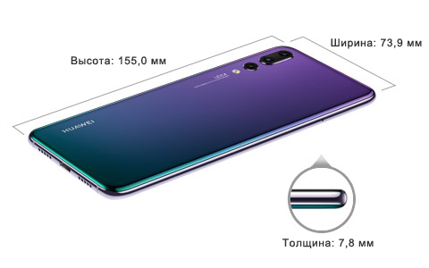

Ширина:73,9 мм Высота:155,0 мм Толщина:7,8 мм Вес:180 г
Восьмиядерный процессор HUAWEI Kirin 970, микроархитектура i7, 4 ядра Cortex A73 с частотой 2,36 ГГц и 4 ядра Cortex A53 с частотой 1,8 ГГц
Android 8.1 EMUI 8.1
6 ГБ RAM + 128 ГБ ROM Поскольку вычислительная мощность процессора ограничена, а память используется операционной системой и предустановленными приложениями, фактический доступный объем памяти может быть меньше, чем указано в характеристиках. Он может меняться вследствие обновления приложений, действий пользователя и других факторов.
CLT-L29C: две SIM-карты LTE TDD, LTE FDD, WCDMA, EDGE, GPRS Примечание. Функции сети зависят от оператора.
G-сенсор Датчик освещенности Датчик приближения Фронтальный сканер отпечатков пальцев Датчик Холла Гироскоп Компас Датчик цветовой температуры
Основная камера Три объектива: 40 МП (цветной сенсор, диафрагма f/1.8), 20 МП (черно-белый сенсор, диафрагма f/1.6), 8 МП (телеобъектив, диафрагма f/2.4), поддерживается автофокусировка (лазерная, фазовая, контрастная, глубокий фокус) Примечание. Разрешение фотографий зависит от режима съемки. Фронтальная камера Один объектив: 24 МП, диафрагма f/2.0, поддерживает фиксированное фокусное расстояние Примечание. Разрешение фотографий зависит от режима съемки.
4 000 мА*ч (типичное значение) Типичное значение, указана номинальная емкость. Фактическая емкость аккумулятора может быть немного выше или ниже номинальной.
Смартфон Наушники USB-C Зарядное устройство Кабель USB-C Адаптер "USB-C — разъем для наушников 3,5 мм" Адаптер с разъемом для наушников Защитный чехол Краткое руководство пользователя Инструмент для извлечения SIM-карты Гарантийный талон